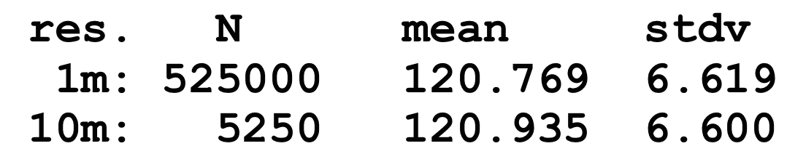

Geospatial Analysis
proximity, buffers, cost surfaces
Helena Mitasova
GIS/MEA582 Geospatial Modeling and Analysis NCSU
Learning objectives
- Understand different metrics for distance
- Define buffer operation
- Explain concept of cost surfaces
- Understand least cost path
Measuring distance
- Euclidean: shortest distance in plane
- Geodesic: shortest distance over curved surface, great circle on sphere: orthodrome
- equation: http://mathworld.wolfram.com/GreatCircle.html
- Lp metrics on meshes or grids
- Linear referencing systems
Can be applied as global, zonal, or focal operations
Measuring distance: spheroid
Geodesic: shortest distance over curved surface, great circle on sphere: orthodrome

Measuring distance: networks
- Generalized distance: Lp metrics for measuring distance on meshes or grids
- distance between a(x1,y1) and b(x2,y2)
- dp(a,b)=[(x1-x2)p + (y1-y2)p]1/p
- p=2 : Euclidean distance
- p=1 : Manhattan (Taxicab, City block) metric
- Linear Referencing Systems: location is defined by its linear distance from a known point on a route (e.g. milepost on a highway), and distance is measured along segments of a network; used for roads, utilities, waterways
Measuring distance: networks
Manhattan metric, Linear Referencing Systems 

Measuring feature length
- feature length is scale dependent
- what is the length of NC coastline? Neuse river?
- vector model: length depends on level of detail (point density representing the feature)
- raster model: resolution and level of detail
- fractals
Measuring feature length
Length of NC coastline
Global statistics: continuous data



Global statistics: discrete data
Map layer to number(s)
Soil properties: soil erodibility mean 0.248
Soil type ID: mode (most common soil type)


Zonal statistics: continuous data
- Agregates continous data to discrete areas
- Hydrology example: mean slope for watersheds to estimate how fast water moves through it


Watersheds (discrete), Slope (continuous), Mean slope for wach watershed (discrete)
Summary
- measuring distance
- buffers
- cost surfaces